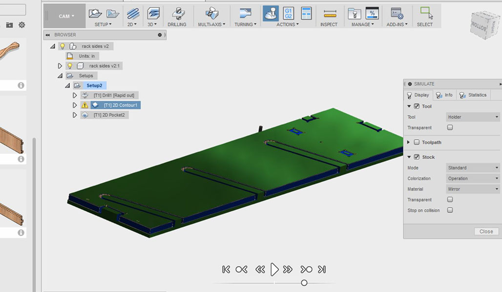

Assignment 7
This has been my favorite week so far in Fab Academy. Our week 7 assignment was to "make something big" using he CNC router in our shop and have it be of a press fit design. I choose to make a project that has been on my to do list for quite some time - a snowboard rack. The reasoning behind this is due to the large amount of room that my snowboard gear takes up. I also wanted to protect them from damage while displaying them. There are numerous designs out on the internet and I chose to use a variaton of the main style of rack. Mine is going to hang in my garage above my adult beverage fridge. I wanted the rack to due three things: 1) fit all three of my decks with bindings attached, 2) have a place for storage of my tuning tools and 3) give me a spot to put my boots so that potential critters don't chew on them during the winter months. This week was a really hectic week in the Innovtation Center so I didn't totally finish my project. I still have to finish out the drawers and paint/finish the plywood to keep it safe from the elements. I am also planning on padding the slots to keep my edges sharp and safe from dings while protecting the base and top deck from scratches.
Here are some of the basic designs on the internet

I decided to take some of the best features from these general designs and work them into my rack. First was to determine the width. I ride a wide/long deck so I decided to put the width at 40 inches which allowed me to keep the rack sides outside all of my current binding set-ups. I also decided to add in a space for drawers to keep my tools in one spot. I could also use the second drawer to keep my waxing supplies in one place as well. After looking at some of the other designs and recalling some of my cabinet haning days I decided to add a row of hanger holes along the inside of the drawer backs to help with hanging. I always hated having to measure mark then drill holes for anchors into studs. With a line of holes you simply have to find the first stud, anchor to the wall and measure over 16 holes (or 19.2 or 24)
Step 1 - Initial designs using Inventor.
assembly fileIndividual parts drawn up
sides shelf top bottom shelf backFor me the designing portion of this project was very simple as I have extensive experience teaching Inventor to my students and have taught woodworking for many years. The key to desiging joints with the CNC router is to make sure you keep a couple things in mind. The first is that you need to do some testing to see what your machine can do in terms of tolerance. Secondly you need to have an accurate measurement of your material to make sure you know now big to make slots and other joint features. Our plywood was labled as 3/4 inch oak vaneer but measured in at .74 inches. Lastly you need to take into account that you are using a CNC router to cut your parts. This means that on inside corners and any other square features you will not have a true 90 degree angle. Your router can only cut as small as the tool you have loaded in your spindle. For exampel if you use a 1/4 inch end mill all inside corners will be a fillet with a .25 radius. The key to this is to use T-Bones or Dog Bones which basically means you drill at the intersection of a 90 degree angle so that your corners can remain square. We also took into account the fact that you need to secure your material to your sacraficial bed. While there are many ways to do this I simply used the router to drill a hole which I then used to screw my project down. These holes were either hidden in the final design in the joint or were acutally used to screw the project together. While the original intent was to have a press fit style project that only needed a rubber mallet to put together. I chose to also give myself the option to screw it together - mainly because I don't want a couple thousand dollars of snowboard gear crashing to the ground. The 6 screws holding this together on my wall in my garages allow me to sleep at night....
Testing of tolerance and gap sizes


Once I had the initial design mocked up in Inventor and Kayla and I tested out our router it was time to move on to the CAM portion of the project. For this I uploaded my parts into Inventor 360 so that I could start to set the tool paths. I used 2D drilling, 2D contouring and 2D pocket for all of my cutting. I had to make some tweaks to my settings so that our dust collection system could keep the cuts clean. Orginally when I tried to make the cut in one pass the sawdust built up and started to fill the shop with smoke. I decided to make three passes with smaller stepdowns so that the dust collection system could keep up. For all of my parts I set XYZ home and ran through a drilling operation first so that I could fasten down my individual parts then I rand the 2D countour and finally the machine ran the 2D pocket operation for any Dado slots that I had. Almost all of my parts took less than 15 minutes each. Coming from a woodworking background I kept finding myself thinking that I could do it faster with traditional tools but I know that in reality I mostly likely could not and if I did it wouldn't be as precise.
Screens from the CAM process
Now that I have all of my files post processed to G code I can move the the CNC router. We are using a Techno Router that has been upgraded via Forest Scientific. Up until this year we have had a bunch of issues with that machine and it never worked correctly. As part of our Fab Lab plan we updated all of the motors, control box and software with the goal of moving it back to our metals area (home) and purchasing a larger machine for our new lab. The machine is working great - the only downside is the size of the bed. I loaded a sheet of .74 inch oak vaneer plywood leftover from a previous woods project into the machine and started to cut my parts out. We have a sacrificial bed bolted to the routers so we can use screws almost anywere to fasten down our material. After turning on the exhaust and using my PPE I started to cut out my Snowboard rack.
Routing out the pieces


Lastly now that the pieces are cut I decided that I needed to spruce up the look of the rack a little. I sanded down all of my edges and took the sides to the laser engraver to add a design on to them. After about an hour both sides were done and I could put the rack together. Success!
Final assembly of the rack (no screws yet)
This is StoneWork, a free, fully standards-compliant CSS template designed by TEMPLATED. The photos in this template are from Fotogrph. This free template is released under the Creative Commons Attribution license, so you're pretty much free to do whatever you want with it (even use it commercially) provided you give us credit for it. Have fun :)